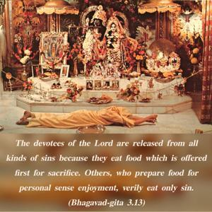
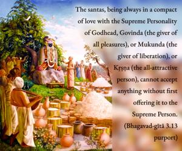

The devotees of the Lord are released from all kinds of sins because they eat food which is offered first for sacrifice. Others, who prepare food for personal sense enjoyment, verily eat only sin.


The devotees of the Supreme Lord, or the persons who are in Kṛṣṇa consciousness, are called santas, and they are always in love with the Lord as it is described in the Brahma-saṁhitā (5.38): premāñjana-cchurita-bhakti-vilocanena santaḥ sadaiva hṛdayeṣu vilokayanti. The santas, being always in a compact of love with the Supreme Personality of Godhead, Govinda (the giver of all pleasures), or Mukunda (the giver of liberation), or Kṛṣṇa (the all-attractive person), cannot accept anything without first offering it to the Supreme Person. Therefore, such devotees always perform yajñas in different modes of devotional service, such as śravaṇam, kīrtanam, smaraṇam, arcanam, etc., and these performances of yajñas keep them always aloof from all kinds of contamination of sinful association in the material world. Others, who prepare food for self or sense gratification, are not only thieves but also the eaters of all kinds of sins. How can a person be happy if he is both a thief and sinful? It is not possible. Therefore, in order for people to become happy in all respects, they must be taught to perform the easy process of saṅkīrtana-yajña, in full Kṛṣṇa consciousness. Otherwise, there can be no peace or happiness in the world.